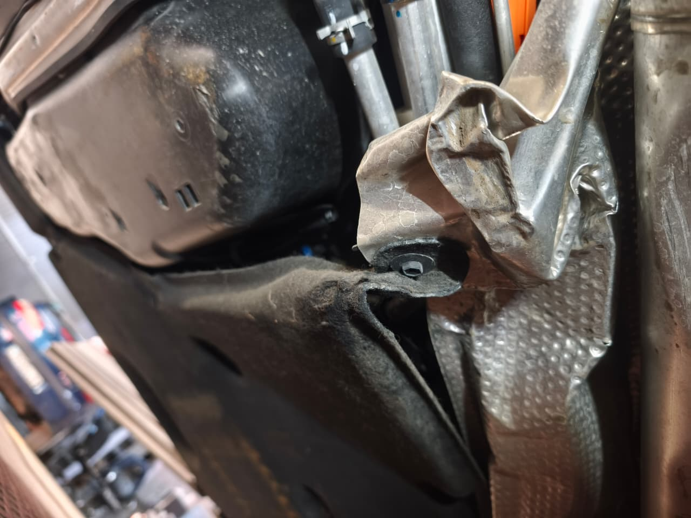
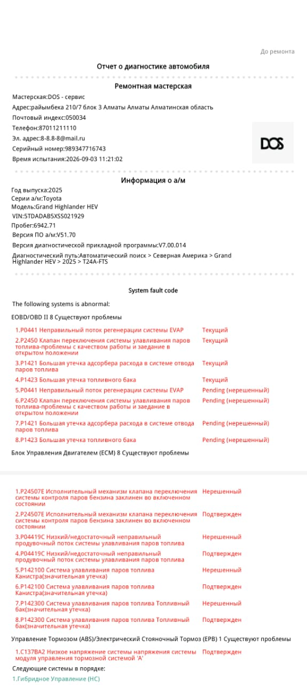
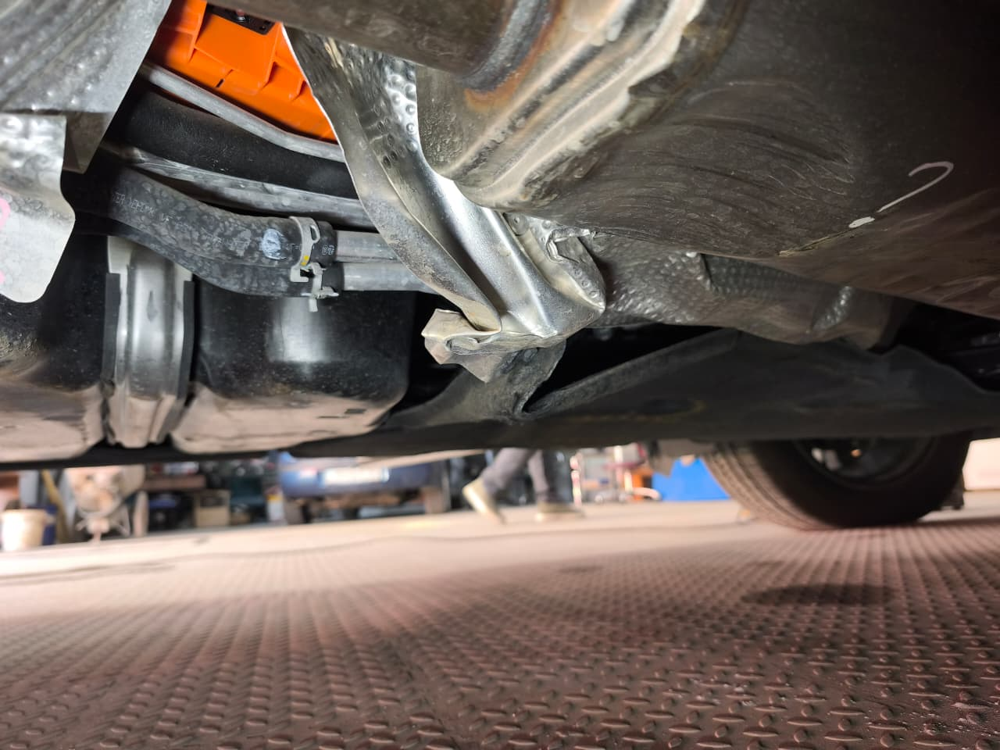
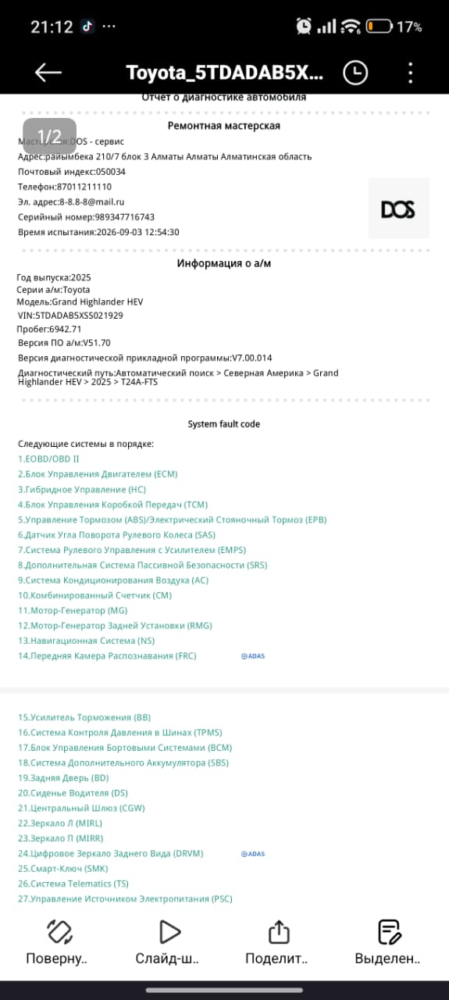

🚙 Toyota Grand Highlander 2025 — диагностика Check Engine и системы EVAP в Алматы
🚘 Автомобиль: Toyota Grand Highlander
📅 Год выпуска: 2025
📍 Город: Алматы
⚠️ Жалоба: загорелась лампа Check Engine
🔧 Работы: компьютерная диагностика, проверка системы EVAP, анализ текущих параметров, проверка исполнительных механизмов.
📞 Обращение владельца
В нашу службу обратился владелец Toyota Grand Highlander 2025 года выпуска с жалобой на загоревшуюся на приборной панели лампу:
⚠️ CHECK ENGINE
Предварительно, ещё во время телефонного разговора, удалось выяснить, что сохранённые ошибки связаны с системой EVAP — системой улавливания паров топлива.
Одним из подозреваемых элементов был насос продувки EVAP.
Чтобы точно определить причину появления ошибки и не менять исправные детали, было принято решение провести полноценную компьютерную диагностику Toyota Grand Highlander.
💻 Компьютерная диагностика EVAP
После подключения диагностического оборудования была выполнена проверка электронных систем автомобиля и параметров, связанных с работой системы улавливания паров топлива.
Особое внимание уделили:
🔍 текущим параметрам давления паров топлива;
💻 работе исполнительных механизмов;
🔧 клапану продувки адсорбера;
⚙️ насосу адсорбера / системе EVAP;
📊 работе клапанных элементов системы;
🔌 корректности работы датчиков.
Задача диагностики заключалась в том, чтобы понять, действительно ли неисправен насос EVAP либо проблема находится в другом элементе системы.
📊 Проверка текущих параметров
В процессе диагностики были проверены текущие параметры давления паров топлива и работа исполнительных механизмов.
Это позволяет оценить не только наличие ошибки в памяти блока управления, но и фактическое поведение системы во время диагностики.
💡 Важный момент: наличие ошибки EVAP ещё не означает, что необходимо сразу менять насос продувки или другой элемент системы.
Поэтому каждый подозреваемый компонент был проверен отдельно.
🔧 Проверка клапана продувки и насоса EVAP
В рамках диагностики была проведена проверка:
✅ клапана продувки адсорбера;
✅ насоса адсорбера;
✅ исполнительных механизмов;
✅ параметров давления паров топлива;
✅ работы клапанных элементов системы;
✅ сигналов и показаний датчиков.
По результатам проведённых проверок явной неисправности проверяемых компонентов обнаружено не было.
Работа системы и проверенных элементов находилась в пределах нормы.
⚠️ В процессе диагностики обнаружилась важная деталь
При дальнейшем общении и анализе состояния автомобиля выяснилось, что Toyota Grand Highlander ранее была после удара.
Это существенно изменило направление дальнейшего поиска неисправности.
Если электронные датчики работают корректно, исполнительные механизмы исправны, а параметры системы находятся в норме, необходимо учитывать возможность механического нарушения герметичности или повреждения элементов системы после ДТП.
Особенно это актуально для системы EVAP, поскольку она связана с:
🔹 топливным баком;
🔹 трубопроводами;
🔹 шлангами;
🔹 соединениями;
🔹 клапанами;
🔹 адсорбером;
🔹 вакуумными каналами.
После удара даже небольшое повреждение, смещение или нарушение герметичности соединения может привести к появлению ошибок системы EVAP.
🔎 Что было рекомендовано владельцу

Так как при компьютерной диагностике:
✅ датчики работали корректно;
✅ исполнительные механизмы функционировали;
✅ насос и клапанные элементы не показали явной неисправности;
✅ текущие параметры давления паров топлива были в норме,
мы не стали рекомендовать без необходимости замену исправного насоса или других дорогостоящих компонентов.
🛠️ Была рекомендована дополнительная проверка вакуумной системы автомобиля.
В первую очередь необходимо проверить систему на предмет возможного:
🔍 нарушения герметичности;
🔍 повреждения вакуумных линий;
🔍 повреждения трубок EVAP;
🔍 негерметичности соединений;
🔍 последствий предыдущего удара.
Такой подход позволяет перейти от простой замены деталей к поиску реальной причины появления ошибки Check Engine.
💡 Почему не стоит сразу менять насос EVAP?
Ошибки системы EVAP нередко приводят владельцев автомобилей к мысли, что необходимо сразу заменить насос, клапан или адсорбер.
Однако электронная диагностика должна проводиться комплексно.
💻 Сначала считываются ошибки.
📊 Затем анализируются текущие параметры.
🔧 Проверяются исполнительные механизмы.
🔌 Проверяются датчики.
🧪 После этого необходимо убедиться в герметичности самой системы.
Если все электронные компоненты работают правильно, а автомобиль ранее подвергался удару, механическую часть системы также необходимо проверять.
🚗 Диагностика Toyota после ДТП
Данный случай показывает, насколько важно учитывать историю автомобиля.
После ДТП неисправность может быть не связана непосредственно с электронным датчиком или блоком управления.
Иногда причина находится в:
🔧 повреждённой трубке;
🔌 разъёме;
🧰 соединении;
💨 нарушении герметичности;
⚙️ механическом повреждении элемента системы.
Поэтому при диагностике автомобиля после удара важно оценивать не только ошибки, но и состояние соответствующих систем в целом.
✅ Результат выполненной работы
На автомобиле Toyota Grand Highlander 2025 года была проведена полноценная компьютерная диагностика по жалобе на Check Engine.
Предварительно было известно, что ошибки связаны с системой EVAP, а под подозрением находился насос продувки.
В ходе диагностики были проверены:
💻 текущие параметры;
📊 давление паров топлива;
🔧 клапан продувки адсорбера;
⚙️ насос адсорбера;
🔌 исполнительные механизмы;
📡 датчики системы.
🎯 Результат:
Проверенные элементы работали корректно, явной неисправности насоса и клапанных элементов обнаружено не было.
После выяснения того, что автомобиль ранее был после удара, владельцу было рекомендовано продолжить диагностику с проверки вакуумной системы и герметичности элементов EVAP.
Главная задача диагностики в данном случае — не просто удалить ошибку и заменить подозрительную деталь, а установить настоящую причину появления Check Engine.
⭐ Вывод
Toyota Grand Highlander 2025 — современный автомобиль с развитой системой контроля паров топлива. При появлении ошибок EVAP необходимо проверять не только насос и клапаны, но и состояние всей системы.
Особенно внимательно следует проводить диагностику автомобиля, который ранее попадал в ДТП.
Правильная последовательность:
💻 компьютерная диагностика → 📊 анализ параметров → 🔧 проверка исполнительных механизмов → 🔌 проверка датчиков → 💨 проверка герметичности и вакуумной системы.
Именно комплексная диагностика позволяет избежать необоснованной замены исправных компонентов и быстрее определить направление дальнейшего ремонта.
💻 Компьютерная диагностика — ошибки ECM

При подключении диагностического оборудования была выполнена проверка блока управления двигателем ECM.
В памяти блока были обнаружены 8 записей по системе контроля паров топлива EVAP.
⚠️ Зафиксированные ошибки:
1–2. P24507E
🔧 Исполнительный механизм клапана переключения системы контроля паров бензина заклинен во включенном состоянии.
Ошибка присутствовала в двух статусах:
- 🔴 Нерешенный
- 🟠 Подтвержден
3–4. P04419C
💨 Низкий / недостаточный продувочный поток системы улавливания паров топлива EVAP.
Статусы:
- 🔴 Нерешенный
- 🟠 Подтвержден
5–6. P142100
⛽ Система улавливания паров топлива — канистра, значительная утечка.
Статусы:
- 🔴 Нерешенный
- 🟠 Подтвержден
7–8. P142300
⛽ Система улавливания паров топлива — топливный бак, значительная утечка.
Статусы:
- 🔴 Нерешенный
- 🟠 Подтвержден
🔎 Что показала дальнейшая проверка?
Наличие сразу нескольких ошибок EVAP первоначально указывало на возможную неисправность системы улавливания паров топлива.
В частности, внимание было направлено на:
🔧 клапан продувки адсорбера;
⚙️ насос адсорбера;
💨 систему продувки;
📊 давление паров топлива;
🔌 исполнительные механизмы;
📡 датчики системы EVAP.
Однако при проверке текущих параметров и исполнительных механизмов работа проверяемых элементов была оценена как нормальная.
Также была проведена проверка клапана продувки адсорбера, насоса адсорбера и связанных с системой клапанных элементов.
✅ Явной неисправности проверенных компонентов обнаружено не было.
Это важный результат диагностики, поскольку найденные коды сами по себе ещё не означают, что необходимо сразу менять насос или клапан.
🚨 Особое внимание — значительная утечка EVAP
Наиболее важными в данном случае стали ошибки:
P142100 — значительная утечка со стороны канистры
и
P142300 — значительная утечка со стороны топливного бака.
Кроме того, код P04419C указывает на недостаточный поток продувки EVAP, а P24507E — на проблему с исполнительным механизмом клапана переключения системы контроля паров топлива.
Все эти ошибки необходимо рассматривать в комплексе, а не по отдельности.
🚗 Автомобиль ранее был после удара

В процессе диагностики выяснилась важная информация — Toyota Grand Highlander ранее была после удара.
Учитывая это обстоятельство и тот факт, что электронные датчики и проверенные исполнительные механизмы работают корректно, появилась необходимость проверить уже не только электронную часть, но и физическое состояние системы EVAP.
После ДТП необходимо исключить:
🔍 повреждение трубок системы EVAP;
🔍 нарушение герметичности соединений;
🔍 повреждение вакуумных линий;
🔍 смещение или повреждение элементов системы;
🔍 повреждение канистры;
🔍 проблемы в районе топливного бака;
🔍 негерметичность шлангов и соединений.
🛠️ Рекомендация владельцу
По результатам проведённой компьютерной диагностики мы не стали рекомендовать без необходимости замену исправного насоса или клапана.
Владельцу была рекомендована дальнейшая проверка:
💨 вакуумной системы и герметичности EVAP.
Это особенно важно с учётом того, что автомобиль ранее был после удара, а в памяти ECM присутствуют ошибки, прямо указывающие на значительную утечку в системе улавливания паров топлива.
Для окончательного определения причины необходимо проверить физическую герметичность системы и найти место возможной утечки.
📋 Итог диагностики

🚘 Toyota Grand Highlander 2025
⚠️ Жалоба: горит Check Engine.
💻 ECM: обнаружено 8 записей по системе EVAP.
Коды:
P24507E — исполнительный механизм клапана EVAP;
P04419C — недостаточный продувочный поток EVAP;
P142100 — значительная утечка в районе канистры;
P142300 — значительная утечка в районе топливного бака.
Каждый из кодов присутствовал в соответствующих статусах «Нерешенный» и «Подтвержден».
🔧 Проведена проверка клапана продувки адсорбера.
⚙️ Проверен насос адсорбера.
📊 Проверены текущие параметры давления паров топлива.
💻 Проверены исполнительные механизмы.
📡 Проверена работа датчиков.
✅ Результат
Проверяемые электронные компоненты и исполнительные механизмы работали корректно.
С учётом истории автомобиля после удара и наличия кодов P142100 и P142300, указывающих на значительную утечку EVAP, рекомендована проверка вакуумной системы и физической герметичности системы улавливания паров топлива.
🎯 Главная задача дальнейшей диагностики — найти место утечки, а не менять исправные компоненты по одному только коду ошибки.
👨🔧 Работы выполнил автоэлектрик Олег.
Читайте также: «Toyota Grand Highlander HEV 2025 — ошибка P24507E» и «Hyundai Tucson 2022 — ошибка P04567A».
Нужна помощь? Ремонт системы EVAP — выезд по городу и области.